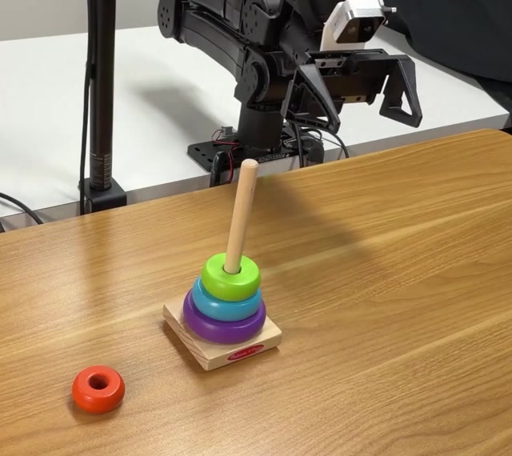
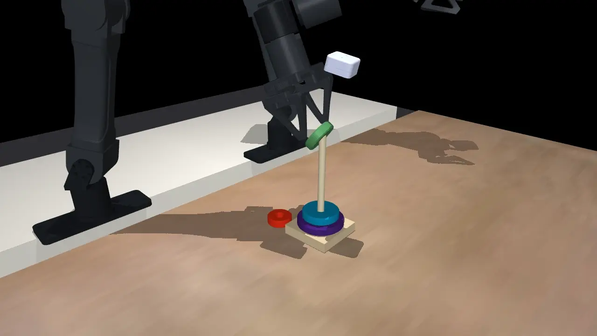

Robots that recover.
Recova: Agent-Guided Failure Recovery
for Autonomous Robotic Manipulation
A language-model agent turns manipulation failures into training data — first in a digital twin, then across four real robots running in parallel.
Failures are the missing data in robot learning
Task: “Stack the rings in size order.”
 Failure state
Failure state

Recovery · real robot1×VLA policies learn mostly from successful demos. One small slip puts the scene outside that data, and retrying often leaves the problem in place — the robotics version of exposure bias. Recovery needs its own data, collected in failure states.
Recova: an agent turns failures into data
01Real → Sim
A coding agent rebuilds the workstation as a digital twin, then explores failures and writes recovery programs there — no hardware resets.
02Sim → Real
Twin rollouts train two VLA policies from π0.5: a task policy and a recovery policy conditioned on a recovery instruction.
03Real → Data
Autonomous DAgger on four robots: a VLM monitor triggers recovery or calls a human, and each outcome trains a policy.
New real-world failures become new recovery skills, and the loop repeats.
Real → Sim → Real: a twin as a failure data engine
A coding agent rebuilds the real workstation in MuJoCo and explores failures there, with no hardware resets.
Reconstruct
Real → Sim Real camera2×
Real camera2×
 MuJoCo twin2×
MuJoCo twin2×
From camera images, calibration, and recorded robot trajectories, the agent fits object poses and contact parameters until the replayed trajectory matches the real camera views.
Explore & repair
In sim
Digital twin2×The agent tries the task, diagnoses each failure, names a recovery instruction z, and writes a program to fix it.
def push_down(ring): p = locate(ring) move_above(p) press(p, dz=-0.02)
Train & deploy
Sim → Real Real robot · learned policy1×
Real robot · learned policy1×
Both fine-tuned from π0.5. Programs also go to a code-as-policy skill library.
Why two policies? Recovery is conditioned on the recovery instruction z, not the task g. Each policy trains only on data for its own role, and a recovery skill is not tied to one task.
Autonomous DAgger: four robots, one operator
A VLM monitor watches every episode, triggers and verifies recovery, and calls the operator only at handoffs.
 4 stations · 1 operator10×
4 stations · 1 operator10×
 1
1 2
2 3
3 4
4Top cameras, same moment. Each station has its own background and distractor objects.
A separate 14-minute session · all four stations
Each episode outcome trains the policy it can teach
Monitor: Gemini 3.8 Flash on all four cameras · completion check every 20 s · intervention check every 10 s, asynchronous · median latency ≈ 5 s
Failed segments are logged, never trained on. Policies stay fixed within a round and are fine-tuned on the aggregated data between rounds.
Four collection rounds · mahjong draw, 7–8 episodes each
Real robots: 23.8% → 87.5% mean task success
Four bimanual tasks on YAM workstations · 20 trials per task and configuration · policies fine-tuned from π0.5
Recovery is best on every task. It helps most where one misplaced object blocks every later step: +15 on pencil box and rings, +5 on mahjong, where DAgger already reaches 80%+.
Takeaway
Recovery is a learnable skill alongside task execution, and an agent can turn each failure into training data.
 2×
2× 2×
2× 2×
2× 2×
2×Selected recoveries by learned policies on hardware. Next: register new skills automatically and share them across tasks.